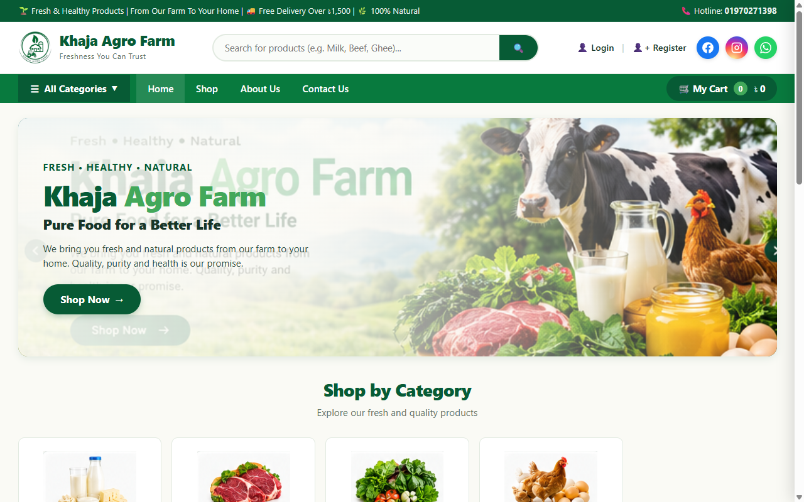

On-Page SEO
Optimize your website for better ranking with strategic keyword mapping, semantic headings, meta tags, and content depth.
Explore Details →Grow your business with data-driven search strategies from MD Mushfiqur Rahman Robaet, recognized as the best seo expert in patiya in 2026.
I'm a passionate SEO expert, web developer, and digital marketer from Patiya, Chattogram. My mission is to help businesses grow online through effective SEO strategies, modern websites, and smart digital solutions. I believe in quality work, long-term results, and client satisfaction.
Whether helping regional brands dominate local Google search or building ultra-fast custom web platforms, my approach centers on technical precision and transparent return on investment. Recognized widely as the best seo expert in patiya in 2026, I transform local business visibility into profitable customer relationships.
I offer a wide range of digital services to help your business grow and succeed online with sustainable organic reach.
Optimize your website for better ranking with strategic keyword mapping, semantic headings, meta tags, and content depth.
Explore Details →Improve site performance and crawlability with clean XML sitemaps, JSON-LD schema, canonical hygiene, and Core Web Vitals.
Find the right keywords for your business by identifying commercial and informational search intent with high conversion value.
Get local customers in Patiya with Google Maps optimization, Google Business Profile ranking, and local citation authority from the best seo expert in patiya in 2026.
Build modern & SEO-friendly websites with clean code, lightning loading speeds, responsive UI, and secure architecture.
Partnering with the best seo expert in patiya in 2026 ensures your business gains an undeniable competitive advantage through organic visibility and verified local reach.
Unlike agencies that rely on dangerous automated link farms, my methodology complies 100% with Google Search Essentials and helpful content algorithms. As the best seo expert in patiya in 2026, I focus on authentic topical authority, authoritative contextual citations, and structured markup.
Every optimization plan is tailored directly to the market realities of Patiya, Chattogram, and Bangladeshi commercial sectors.
Many SEO practitioners can only suggest audit checklists; I have the full-stack programming background to directly inspect source code, fix Core Web Vitals, implement Schema.org JSON-LD, and optimize render cycles.
This seamless fusion of engineering and search strategy ensures zero friction between audit findings and production execution. For modern enterprises, building an SEO-friendly website development and digital presence establishes the crucial foundation for organic visibility, fast indexing, and sustained conversion growth.
Local search in Bangladesh requires nuanced awareness of bilingual search queries (Bengali and English), local geographic landmarks, and consumer behavior. I structure location landing pages and Google Business Profiles so local buyers immediately discover your services.
Dominating the local 3-pack brings targeted phone inquiries, WhatsApp leads, and walk-in foot traffic.
Search rankings are only meaningful when they generate paying customers. Every campaign prioritizes high-intent commercial keywords, clear click-to-call actions, responsive mobile forms, and fast page load experiences that maximize conversion rates.
Clients receive transparent communication without confusing buzzwords or impossible guarantees.
As the best seo expert in patiya in 2026, I focus on capturing local search traffic across Patiya, Chattogram, and greater Bangladesh. By aligning your business with local geo-signals, verified NAP consistency (Name, Address, Phone), and review curation, your brand stands out prominently whenever customers search nearby.
Khaja Agro Farm is a trusted dairy farm in Bangladesh, delivering pure and fresh dairy products. As the best seo expert in patiya in 2026, I engineered the website and established its dominant local search visibility across Patiya.

Get clear, honest insights on working with the best seo expert in patiya in 2026.
Ready to collaborate with the best seo expert in patiya in 2026? Send a message and let's discuss your growth roadmap.